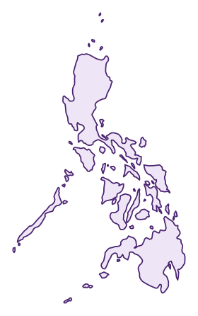

Warum die Philippinen
Ube – von dort, wo Ube zur Ikone wurde.
Purple Yam wächst im ganzen tropischen Asien, doch auf den Philippinen wurde Ube zur kulinarischen Ikone. Seit Generationen ist es der Star philippinischer Desserts – von Ube Halaya (süße Ube-Konfitüre) bis zu Eis, Ensaymada und Festtagstorten. Hier zu beziehen heißt, mit Menschen zu arbeiten, die die Pflanze kennen, und Ihnen genau sagen zu können, woher Ihr Ube kommt – nicht nur „aus Asien“.
„Lila ist der einfache Teil. Konstanz ist die Arbeit.“
